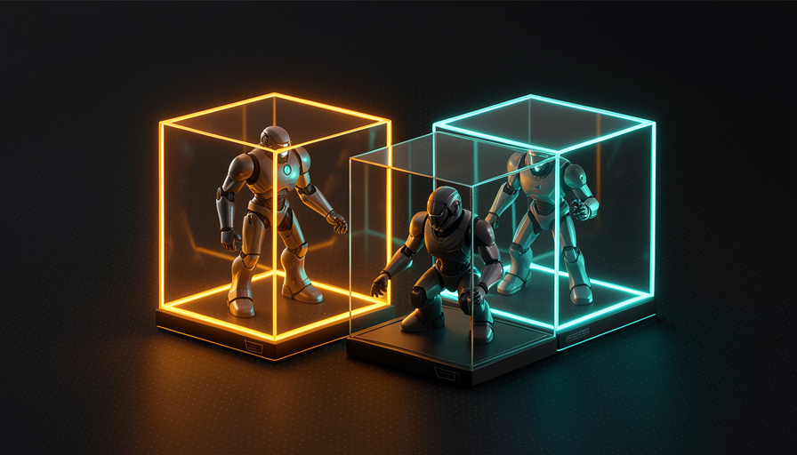
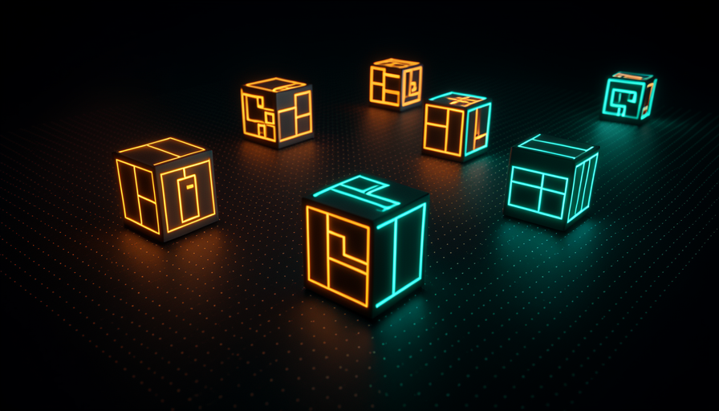
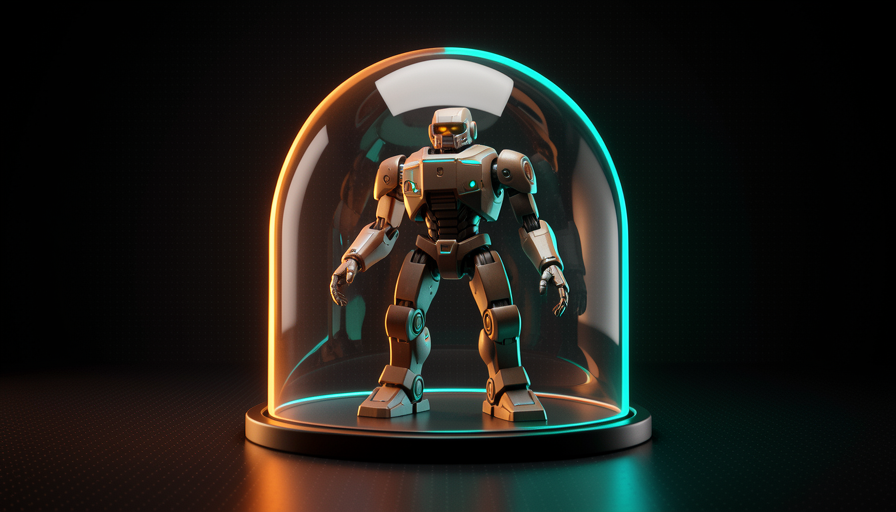

📖 Glosario vivo (lee antes — vuelve siempre que lo necesites)
Los términos básicos (modelo, agente, harness, skill) ya los afianzaste en las Trilhas 1-3. Aquí están los términos nuevos de este módulo —todos de infraestructura. No los memorices: entiende la idea de cada uno:
⚡ Por qué paralelizar
🧠 Imagínalo así: eres el jefe de una cocina. Puedes cocinar un plato a la vez, solo, o tener cinco cocineros, cada uno en su estación, preparando cinco platos al mismo tiempo. Tú solo repartes las comandas y pruebas el resultado. La misma noche rinde cinco veces más.
En el módulo 4.1 viste el AFK (away from keyboard): en vez de aprobar cada paso, lanzas el agente y él se encarga. Pocock describe esto como el momento en que "entró de verdad" en la programación con IA, porque "te quita de la ecuación" y abre una puerta nueva: si el agente no te necesita al lado, no tienes que ejecutar un agente — puedes ejecutarlo varios. Es lo que se llama paralelizar.
La imagen que usa es literal: "two, three, four, five of me" — dos, tres, cuatro, cinco de ti, cada copia encargándose de una tarea diferente. Mientras un agente refactoriza un módulo, otro escribe pruebas y un tercero corrige un bug. El cuello de botella deja de ser "cuánto código puedo escribir" y pasa a ser "cuántas tareas bien delimitadas puedo despachar". El porqué es directo: el tiempo del agente es barato y abundante; el tuyo es caro y escaso. Paralelizar cambia el recurso escaso (tú) por el abundante (agentes). El error común aquí es querer paralelizar tareas vagas o que dependen unas de otras; entonces los agentes se estorban. Paraleliza solo lo que sea independiente y tenga un alcance claro (practicaste esto en la Trilha 2, «delegación»).
En serie, las tareas esperan en la fila. En paralelo, cada agente trabaja en su propio espacio, simultáneamente.

En 1 frase: si el agente trabaja solo (AFK), no ejecutas uno: ejecutas una flota, y tu tiempo deja de ser el cuello de botella.
☢️ El riesgo de ejecutar sin sandbox
🧠 Imagínalo así: tú le das las llaves de toda tu casa a un pasante muy rápido y muy seguro de sí mismo, y te vas. La mayoría de las veces hace el trabajo. Pero si entiende mal "limpia el desorden", puede tirar cosas que nunca recuperarás. Peor aún: puede anotar la contraseña de la caja fuerte y llevársela.
Aquí está la razón de todo lo que viene después. Cuando el agente trabaja AFK, nadie lo está mirando mientras ejecuta comandos. Si se ejecuta directamente en tu máquina, tiene el tu poder: puede borrar archivos, instalar cosas, leer secretos. Pocock es explícito sobre lo que puede salir mal sin aislamiento: el agente puede "delete your home directory" (borrar tu carpeta personal — el famoso rm -rf que lo limpia todo) o "exfiltrate env vars" — hacer exfiltración de tus env vars (tus claves de API y contraseñas).
No es que el modelo sea «malvado». El problema es la probabilidad: un agente que ejecuta miles de comandos sin supervisión, tarde o temprano, interpretará mal una instrucción, seguirá un comando peligroso copiado de un README o caerá en un inyección de prompt oculto en un archivo. Cuanto más paralelizas (tema 1), más comandos se ejecutan sin que nadie los supervise — así que el riesgo crece junto con la productividad. El error común es pensar «nunca me ha pasado, así que es seguro». La regla de oro del AFK es: nunca dale al agente sin supervisión un poder que no estarías dispuesto a perder. La respuesta es el tema 3: el sandbox.

⚠️ Error común de principiante
Habilitar "aceptar todo / no me preguntes" (modo sin confirmaciones) en un agente que se ejecuta en tu máquina, sin aislamiento. Es exactamente la combinación que Pocock señala como peligrosa: AFK + sin sandbox = confías al 100 % en un proceso que ejecuta comandos sin que nadie los revise.
En 1 frase: un agente AFK en tu máquina sin protección puede borrar tu carpeta personal o filtrar tus claves — el riesgo es real, no teórico.
🏰 Sand Castle
🧠 Imagínalo así: un castillo de arena en la playa. Los niños lo construyen, lo derriban y lo vuelven a hacer — y nada de eso afecta tu casa. Si una ola se lleva todo, a nadie le importa: estaba hecho para ser desechable. La sandbox es exactamente eso para el agente.
La solución al tema 2 es darle al agente una sandbox — una caja de arena aislada donde puede hacer lo que quiera sin tocar tu máquina. La herramienta que Pocock usa para esto se llama Sand Castle (castillo de arena): "ejecuta agentes en sandboxes" y los orquesta. Es el corazón de su configuración AFK — "la mayor parte de mi trabajo es AFK", y ese trabajo ocurre dentro de Sand Castle, no en la máquina sin protección. La idea central: cada agente recibe un entorno propio, aislado y desechable.
¿Por qué esto lo desbloquea todo? Porque resuelve los dos problemas de una vez. (1) Seguridad: si el agente intenta rm -rf o leer tus env vars, solo alcanza lo que está dentro de la caja — tu carpeta personal y tus claves reales quedan fuera. (2) Paralelismo: como cada caja es independiente, puedes abrir diez sin que un agente interfiera con otro. Pocock combina Sand Castle con GitHub Actions (lo verás en el módulo 4.3) y dice que es "unreasonably effective" — increíblemente eficaz, porque puedes «paralelizar todo lo que quieras, sin preocuparte por los recursos locales». El error común: tratar el sandbox como algo opcional («después lo configuro»). Es un requisito previo para ejecutar en paralelo en modo AFK, no un lujo.

🔬 Ejemplo resuelto: la misma tarea peligrosa, con y sin sandbox
Tarea AFK: "limpia los archivos temporales del proyecto y ejecuta la build". Por error, el agente arma un comando demasiado amplio: rm -rf ~/ (borrar toda la carpeta personal). Mira los dos desenlaces:
Sin sandbox (en la máquina sin protección)
El comando se ejecuta con tu usuario. Tu carpeta personal desaparece: fotos, configuraciones, claves SSH. No hay "deshacer". Te das cuenta cuando vuelves al teclado, horas después.
Con sandbox (Sand Castle)
O ~/ de la caja es vacío y aislado. El comando borra solo el contenido de la propia sandbox. Desechas la caja, lees el log, ajustas el prompt y lo ejecutas de nuevo. Daño real: cero.
Profundiza (opcional): ¿por qué el nombre «Sand Castle»?
La metáfora se conecta con «sandbox» (caja de arena). Si el sandbox es la caja donde juega el agente, el Sand Castle es lo que construyes con varias cajas: crea, administra y paraleliza muchos sandboxes al mismo tiempo, como un castillo hecho de muchos baldes de arena. Y, como un castillo de arena de verdad, cada caja es efímera — hecha para descartarse y rehacerse sin costo.
En 1 frase: Sand Castle le da a cada agente su propio castillo de arena: puede derribarlo todo ahí dentro sin tocar nunca tu casa.
🐳 Docker / Podman
🧠 Imagínalo así: un contenedor de barco. No importa qué lleva dentro — electrónicos, frutas, muebles — la caja tiene la misma forma, se cierra igual y queda sellada. Apilas cuantos quieras, y lo que hay en uno no se filtra al otro. Contenedores de software son la misma idea.
Por debajo, el sandbox generalmente es un container. Las dos herramientas más comunes para crear contenedores en tu propia máquina son Docker e Podman — Pocock las cita precisamente como base de las sandboxes locales. Describes la caja en un archivo de receta (qué sistema, qué bibliotecas, qué código entra) y la herramienta crea a partir de ahí un entorno aislado. El agente trabaja dentro de ese entorno y solo tiene acceso a lo que pusiste en la caja: nada más de la máquina.
La diferencia práctica entre los dos es pequeña para nuestro uso: Docker es el más popular y tiene un «daemon» (un servicio que se ejecuta todo el tiempo) con privilegios elevados; Podman hace casi lo mismo, pero sin daemon y pudiendo ejecutarse «rootless» (sin privilegios de administrador), algo que mucha gente prefiere por seguridad. Para el agente, ambos ofrecen lo que importa: aislamiento (lo que pasa en la caja se queda en la caja) y descartabilidad (terminó o algo salió mal, borras el contenedor y abres otro limpio en segundos). El error común es confundir un contenedor con una máquina virtual: el contenedor es mucho más ligero y rápido de iniciar, por eso puedes abrir decenas para paralelizar, algo inviable con máquinas virtuales pesadas.
Los contenedores ligeros se apilan en una sola máquina: cada uno aislado, cada uno con un agente. Así es como la flota paraleliza.
# Rodar um agente DENTRO de uma sandbox (container Docker ou Podman).
# Troque "docker" por "podman" — os comandos são compatíveis.
docker run --rm -it \
--name agente-1 \ # nome da caixa; --rm = some ao terminar
--network none \ # SEM rede: bloqueia exfiltração de chaves
--memory 4g --cpus 2 \ # limites de recurso por agente
-v "$PWD":/work -w /work \ # monta SÓ esta pasta (não a home inteira)
agent-sandbox:latest \ # imagem com Node, git e o CLI do agente
claude --dangerously-skip-permissions \
-p "Implemente a issue #795 e rode os testes"
# Frota: rode em paralelo, um container por tarefa (cada um isolado).
for n in 1 2 3 4; do
docker run --rm -d --name "agente-$n" --network none \
-v "$PWD/worktree-$n":/work -w /work agent-sandbox:latest \
claude --dangerously-skip-permissions -p "$(cat tarefas/$n.md)"
done
# Alternativa pronta: deixe o Sand Castle orquestrar as sandboxes por você.
# npx sandcastle run --parallel 4 --queue ./tarefas
En 1 frase: Docker y Podman crean contenedores ligeros y desechables en tu máquina: la forma local de darle un entorno aislado a cada agente.
☁️ Sandboxes de Vercel
🧠 Imagínalo así: en lugar de cocinar todo en tu cocina (que se calienta, se ensucia y tiene espacio limitado), alquilas cocinas industriales por hora, en la ciudad. Cada cocinero usa una; cuando termina, la devuelve. Tu casa nunca se usa, y puedes alquilar diez a la vez.
Los contenedores locales (tema 4) usan los recursos de la tu máquina: CPU, memoria, disco. Si abres diez agentes pesados, tu portátil se recalienta. La alternativa que menciona Pocock son las Vercel sandboxes — sandboxes que se ejecutan en la nube, en la infraestructura de Vercel. El aislamiento es el mismo (cada agente en su propia caja), pero el "computador" que sufre es el de ellos, no el tuyo.
Es exactamente lo que resume al combinarlo todo con GitHub Actions: «paralelizas todo lo que quieras, sin preocuparte por los recursos locales". Esa es la principal ventaja del sandbox en la nube — desacoplas la escala de los agentes de la potencia de tu hardware. ¿Quieres ejecutar 1 o 50 agentes? Tu laptop sigue fría y libre para que trabajes. El trade-off (e o error común de ignorarlo): la nube cuesta dinero según el tiempo de ejecución y los secretos pasan por servidores de terceros; por eso igual tienes que configurar qué env vars entran en la caja y mantener el principio del tema 2 (dar solo lo mínimo necesario). Local (Docker/Podman) es gratis y privado, pero está limitado por tu hardware; la nube (Vercel) escala sin límites, pero cobra y exige cuidado con los secretos.
Recuperación rápida: ¿cuál es la principal ventaja de un sandbox en la nube (Vercel) sobre uno local (Docker)?
En 1 frase: Los Vercel sandboxes llevan las cajas a la nube: puedes escalar la flota sin recalentar (ni ocupar) tu propia computadora.
🛰️ Flota en paralelo
🧠 Imagínalo así: un controlador de tráfico aéreo. No pilota ningún avión — despacha varios, cada uno en su ruta y a su altitud, y solo interviene cuando hace falta tomar una decisión. Cuanto más organizado está el espacio aéreo, más aviones vuelan al mismo tiempo, con seguridad.
Al juntar todo: sandbox (aislamiento) + paralelizar (varios agentes) = una flota que trabaja por ti. El camino mental es una escalera: (1) activas AFK en vez de aprobar paso a paso; (2) cada agente va a su sandbox (Sand Castle, sobre Docker/Podman o Vercel), así que ninguno puede borrar tu carpeta personal ni filtrar tus claves; (3) como las cajas están aisladas, abres tantas como quieras. Pocock llama a esto "unreasonably effective": combinado con GitHub Actions (módulo 4.3), «paralelizas todo lo que quieras, sin preocuparte por los recursos locales». Tu papel cambia: de quien escribe código a quien asigna y revisa una flota. Antes de desplegarla, ejecuta esta lista de verificación:
Antes de soltar a frota de agentes AFK em paralelo: [ ] SANDBOX — cada agente roda numa caixa isolada (Sand Castle / Docker / Podman / Vercel)? [ ] SEGREDOS — só as env vars mínimas entram na caixa? (rede off ou restrita?) [ ] ESCOPO — cada tarefa é independente e bem-escopada (não dependem uma da outra)? [ ] DESCARTÁVEL — se uma caixa der ruim, eu jogo fora sem perder nada real? [ ] SAÍDA — o resultado sai como PR/commit pra eu revisar (não direto na main)? Se algum falhar: NÃO paralelize ainda. Conserte o harness primeiro.
Recuperación rápida: ¿por qué la sandbox es lo que desbloquea ¿ejecutar muchos agentes en paralelo?
En 1 frase: sandbox aísla el riesgo y el aislamiento libera la escala: eso es lo que transforma «un agente» en una flota que solo tienes que despachar y revisar.
🧾 Resumen del módulo
Próximo módulo:
4.3 — GitHub Actions + agentes: AFK en la nube; agentes que se ejecutan en un PR y entregan el trabajo como pull request.